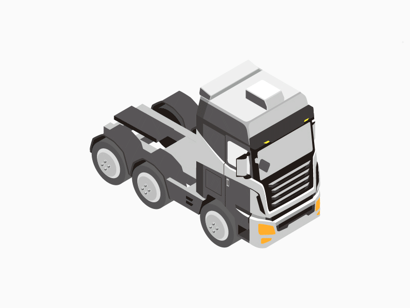

Engineered an Internal Policy chatbot, deploying RAG pipeline, resulting in a 40%
reduction in policy-related inquiries and saving 25 hours per week for the HR team.
Orchestrated creation of data connectors and mount points for departmental blob storages, including Active Directory onboarding and cloud data migration
Integrated internal identity access management with the cybersecurity team, ensuring secure authentication processes
Developed a comprehensive data ingestion pipeline, including document parsing, metadata extraction, data cleaning, semantic chunking, embedding models, and vector indexing
Architected a Retrieval-Augmented Generation (RAG) pipeline with LangChain and GPT-4 Turbo for chat functionality, evaluated using RAGAS framework
Designed and executed unit test cases for each component, ensuring reliability and quality
CLIP FOR AUTOMOTIVE PARTS
Collected a comprehensive dataset consisting of high-resolution images of automotive parts, ensuring diversity in components
Initial annotations are done using vit-gpt2-image-captioning and Azure Cognitive Services , quality of annotations has been maintained by manual verification and edits
Albumentations are used for Data augmentation and Adopted the CLIP architecture
Explored the potential for transfer learning by adapting the fine-tuned CLIP model for specific automotive applications, such as automated inventory management, quality control, and part identification in assembly lines
Implemented interpretability techniques, such as attention visualization, to provide insights into the model's decision-making process, enhancing trust and transparency in its predictions

Quality Check Recommendation System
Implemented a Recommendation System for Predictive Quality, significantly
enhancing failure prediction. Achieved a 30% reduction in rework.
The motivation is to develop a recommendation system using collaborative filtering to recommend the component failures
during assembly in the production plant in-order to reduce the finances on rework rate
Created profiles based on unique vehicle configuration and calculated defect rate of failures
Also used Association rules and DBSCAN clustering to find the associated failures
`
Lane Segmentation for Country Road Scenarios
Volunteered to enhance the Lane Segmentation model, optimized performance for
country road and rough road scenarios improving F-measure by 7%
The idea is to improve the performance of the lane detection for country road scenarios using ERFnet and PIDNet
architectures
Challenges are to overcome the scenarios like Sharp turns, adverse weather conditions and non stability of the input
camera mounted on truck for off road
Fine-tuned MAXIM model for low light image enhancement and adverse weather conditions
Collected and augmented data to overcome uneven data distribution for sharp turns
Orientation Aware Scene Text Detection
Conducted research and developed an architecture for orientation-aware scene
text detection, resulting in a patent and improving text detection F-measure to
93%
The motivation is to develop a Text Detection architecture which should be able to detect the orientation of the text
from (0 to 360 degrees) along with the Text Instance
As part of our research , developed an architecture which is able distinguish the text between 0 and 180 degrees.This
helped us to extend our pipeline to identify the orientation of the text from (0 to 360 degrees) without disturbing the
text instance detection
Involved in building a Recommendation System for Predictive Quality use-case, in-order to recommend the failures of
components in the production plant of Trucks
Volunteered in improvising Lane Segmentation model for country road scenarios in Robot driven Trucks for rough road
testing
Participated in Hackathon and won rewards for building Employee Entry automation using Face Detection , Augmented
Reality for post covid scenarios
Performing and Gathering data from Visual Inspection, Physical Inspection, Burn Test, Chord-Level-Testing, QT, AT.
Explored various ML classification algorithms and Ensemble Techniques to predict the Acceptance of a PCB in Servo Controller of Electro Mechanical Actuator for the tail section of the Tactic Missiles.